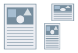

Чтобы печатать на бумаге, формат которой отличается от стандартного, сперва необходимо зарегистрировать этот формат бумаги.

1.
Нажмите [ ] (Пуск) → [Устройства и принтеры].
] (Пуск) → [Устройства и принтеры].
] (Пуск) → [Устройства и принтеры].Выше указаны действия в ОС Windows 7 и Server 2008 R2.
В ОС Windows 10: нажмите [Параметры] → [Устройства] → [Принтеры и сканеры] → [Сопутсвующие параметры] → [Устройства и принтеры].
В ОС Windows 8, 8.1, Server 2012 и Server 2012 R2: на рабочем столе выдвиньте боковую панель с правой стороны экрана и выберите пункты [ Параметры] → [Панель управления] → [Устройства и принтеры].
Параметры] → [Панель управления] → [Устройства и принтеры].
Параметры] → [Панель управления] → [Устройства и принтеры].В ОС Windows Vista и Server 2008: нажмите [] (Пуск) → [Панель управления] → [Принтеры].
] (Пуск) → [Панель управления] → [Принтеры].В ОС Windows Server 2003 и Server 2003 R2: нажмите [Пуск] → [Принтеры и факсы] (или [Пуск] → [Панель управления] → [Принтеры и другое оборудование] → [Принтеры и факсы]).
2.
Щелкните правой кнопкой мыши значок используемого принтера → нажмите [Настройки печати].
3.
Нажмите [Специальный формат бумаги] во вкладке [Макет страницы].
4.
Настройте [Имя пользовательского формата страницы], [Единица измерения] и [Формат бумаги].
Значение настройки [Высота] должно быть равно или больше значения настройки [Ширина].
5.
Нажмите [Регистрация] → [ОК].
Вы можете выбрать зарегистрированный специальный формат бумаги в пунктах [Формат страницы] и [Размер вывода] во вкладке [Основные настройки] или [Макет страницы].
Справки
Специальные форматы бумаги могут использоваться на всех принтерах, установленных на вашем компьютере.
Если специальный формат бумаги создан в приложении, выберите [Специальный [Фиксированное имя]].
При выполнении печати на бумаге нестандартных форматов некоторые функции печати могут быть недоступны.
При регистрации формата бумаги в диалоговом окне свойств сервера печати Windows установите поля шириной от 5,0 мм (0,19 дюйма) до менее чем 50,0 мм (1,96 дюйма).
Выбранная вкладка [Настройки устройства] → [Подробно] → [Отображать специальные форматы бумаги, не включенные в этот драйвер] позволяет регистрировать специальные форматы бумаги, не установленные в драйвере принтера.
Специальные форматы бумаги, которые можно задавать, отличаются в зависимости от модели принтера. Подробная информация о поддерживаемых специальных форматах и источниках бумаги приведена в руководстве, прилагаемом к принтеру.